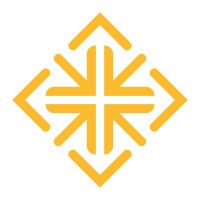

George Urgiles
I am a Computer Science student at the University of San Francisco focused on AI, applied machine learning, and full-stack engineering. My work sits between product execution and technical depth: legal-tech automation, secure desktop tools, real-time interfaces, and performance-minded open source.

I like software that looks sharp, behaves predictably, and carries real technical weight underneath. That applies equally to a production tool, a portfolio, or a systems project.
My background combines academic training in computer science with hands-on execution across AI tooling, secure applications, and product-facing interfaces. I gravitate toward projects where implementation quality matters as much as the idea itself.
Current interests include applied machine learning, automation systems, performance-sensitive software, and interface design that feels considered instead of generic.
Keller Law Group
Worked on document parsing engines and GPT-4-driven automation flows, with an emphasis on throughput, extraction quality, and practical legal-tech workflows.
University of San Francisco
Specializing in artificial intelligence and machine learning while building a broader foundation in algorithms, systems, and software engineering.
Independent and collaborative projects
Typically drawn to products that need both technical credibility and refined user experience, especially where automation or real-time feedback creates leverage.
The mix here is deliberate: interface work, systems work, automation work, and public-scale open source. Together they show the kind of engineer I am.
Contributed to a large-scale Minecraft optimization mod focused on reducing rendering overhead through efficient rendering logic and performance-minded engineering.
Python-based hardware interface for real-time playback telemetry on a dedicated desk display.
Event discovery concept for Los Angeles built around live information, cleaner search, and a sharper city-first experience.
Built a POSIX-style shell in Java with command execution, piping, job control, and signal handling. Good example of low-level problem solving and behavior-focused implementation.
I am most useful on engineering teams that want someone who can ship interfaces, think clearly about systems, and handle AI-enabled product work without treating it like a gimmick.